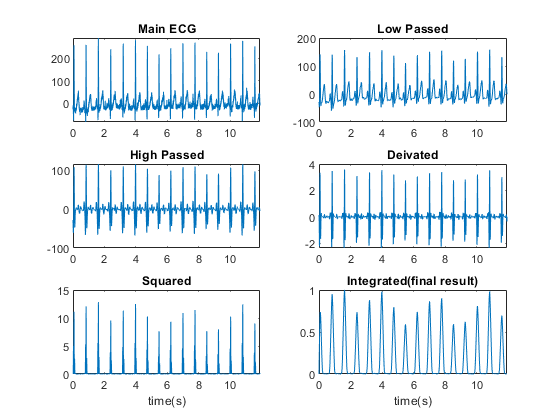
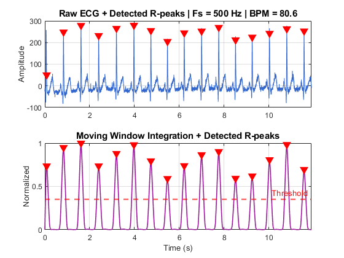

Contents
clc
clear
close all
Estimate sampling frequency using Pan-Tompkins on chest ECG
try various Fs values and monitor the detected R peaks and BPM values
load('M_F_ECG.mat'); % contains S_chest S_chest = S_chest(:); N = length(S_chest); Fs = 500; t = (0:N-1) / Fs; % Time vector (seconds) winSize = round(0.15 * Fs); % a reasonable adaptive window out_pan_tomp = pan_tomp(S_chest, Fs, winSize, 1); % Threshold for R-peak detection threshold = 0.35; min_rr_samples = round(0.4 * Fs); % Minimum RR: for Fs = 1000: 400ms (150 bpm max) {60 s/150 bpm} = 0.4s [~, R_locs] = findpeaks(out_pan_tomp, 'MinPeakHeight', threshold, ... 'MinPeakDistance', min_rr_samples); % Remove duplicate R-peaks R_locs = unique(R_locs); num_beats = length(R_locs); clc avg_bpm = (num_beats / t(end)) * 60; fprintf('Number of detected R-peaks: %d\n', num_beats); fprintf('Average Heart Rate: %.1f bpm\n', (num_beats / t(end)) * 60); % ---- Plot R-peak detection pipeline ---- figure('Name','Step 2: R-Peak Detection'); subplot(2,1,1); plot(t, S_chest, 'Color',[0.2 0.4 0.8]); title(sprintf('Raw ECG + Detected R-peaks | Fs = %d Hz | BPM = %.1f', Fs, avg_bpm), ... 'FontSize',11,'FontWeight','bold'); ylabel('Amplitude'); grid on; hold on; plot(t(R_locs), S_chest(R_locs), 'rv', 'MarkerFaceColor','r','MarkerSize',8); subplot(2,1,2); plot(t, out_pan_tomp, 'Color',[0.6 0.1 0.6],'LineWidth',1.2); hold on; yline(threshold, 'r--', 'LineWidth',1.5, 'Label','Threshold'); plot(t(R_locs), out_pan_tomp(R_locs), 'rv', 'MarkerFaceColor','r','MarkerSize',8); title('Moving Window Integration + Detected R-peaks','FontSize',11,'FontWeight','bold'); ylabel('Normalized'); xlabel('Time (s)'); grid on; for k = 1:2; subplot(2,1,k); xlim([t(1) t(end)]); end
my pan tompkins function based on Rangayyan Book
function [out] = pan_tomp(ECG, Fs, windowSize, plot_option) N = length(ECG); t = linspace(0, N/Fs, N); % Low-pass Filter fn_low = 15; [B1, A1] = butter(3, fn_low*2/Fs, "low"); ecg_lp = filtfilt(B1, A1, ECG); %Highpass filter fn_high = 5; [B2, A2] = butter(3,fn_high*2/Fs, "high"); ecg_hp = filtfilt(B2, A2, ecg_lp); %Derivative filter: from (4.14) eq B3 = [2 1 0 -1 -2]/8; ecg_df = filtfilt(B3, 1, ecg_hp); %Squaring ecg_sq = ecg_df .^2; %Integration: from (4.15) eq % the book says that 30 is suitable for fs = 200. so I chose 150 for fs = 1000 B4 = (1/windowSize)*ones(1,windowSize); out = filtfilt(B4, 1, ecg_sq); %normalize final output out = out/max(out); %plot if plot_option == 1 figure('Name', 'Pan Tompkin step by step! for ECG') subplot(321), plot(t, ECG), title('Main ECG') subplot(322), plot(t, ecg_lp), title('Low Passed') subplot(323), plot(t, ecg_hp), title('High Passed') subplot(324), plot(t, ecg_df), title('Deivated') subplot(325), plot(t, ecg_sq), title('Squared') , xlabel('time(s)') subplot(326), plot(t, out), title('Integrated(final result)') , xlabel('time(s)') end end
Number of detected R-peaks: 16 Average Heart Rate: 80.6 bpm

